Snow Goose Summer Sailing 2026
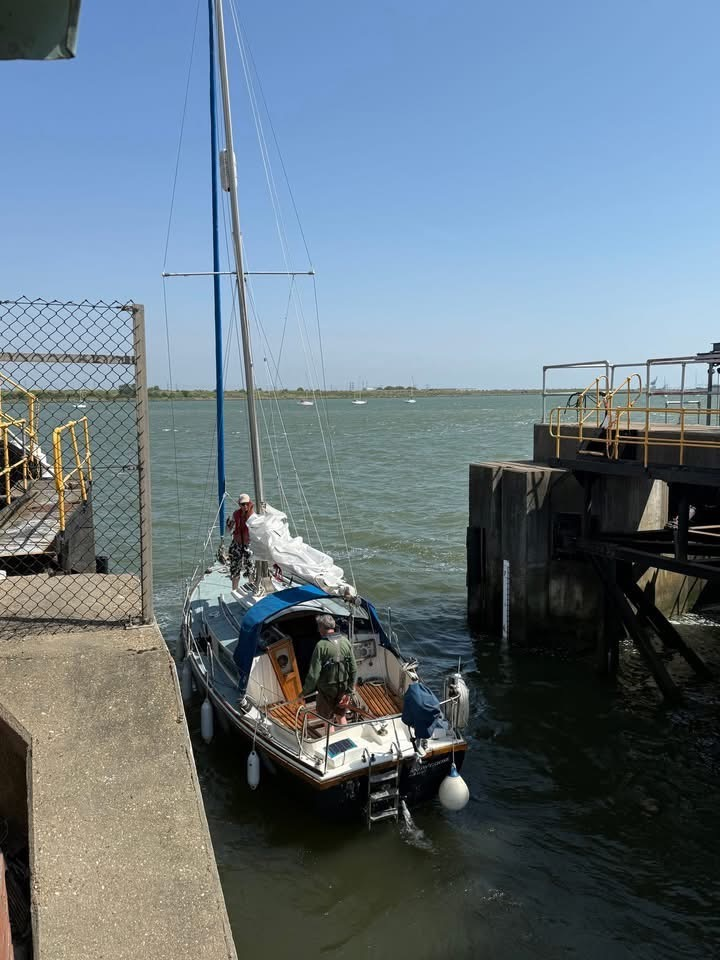
Sailing a much improved Snow Goose this year has been a pleasure. Simple upgrades over the winter have proved successful and afforded better more enjoyable cruising. The weather also helped – with temperatures reaching unprecedented levels some days it was better to be on the water than off. And the winds although very variable have been on the whole benign - we had some very calm days and some quite windy but always workable. The boat performed well throughout with engine running smoothly and new sails and winches adding a bit of speed and a whole lot more manageable short-handed sailing.
Each year I think of going further afield on Snow Goose, across the Channel, further up the East Coast, but local sailing remains more than rewarding enough and I’m learning all the time. Over the last ten years or so I have got to know the Thames Estuary and its sand banks and shallows and the Kent, Essex and Suffolk coasts but there is plenty more to see and find.
The boat is the right size for sailing alone and for sailing these coastal waters. As a 53 year old production sailing yacht designed for low cost family cruising she is basic but stable and robustly well set up. I have been at pains to keep the systems on board simple and the easily operated in the spirit of the original design. Sometimes when surrounded by larger, usually white plastic boats Snow Goose can seem a bit old and unsophisticated but that’s fine by me.
The following are log accounts of my various trips and cruises, some with crew, most single handed.
6.5.26
NE 4-8kn The first sail of the season. Medway 2 hours
New sails and various other untested improvements make this first outing exciting. It was a dull afternoon though and I nearly didn't go out. But ideal light winds for testing the sails tempted me and it proved well worth it. Of course it's always worth it - getting the boat out, being on the water the sounds the light the sense of independence. And it all came back as we headed east into the Medway.
First the sails and integral to them the new winches. Both fit and work well. The sails look good and despite my doubts about the dimensions Wilkinson Sails know what they are doing and they seem to have got it right. The set up of the winches has been concerning me, a compromise of course based on the angle they would fit at, (leaning outwards), and the proximity of the guard rails. But apart from the risk of losing a handle overboard all seems well. And most importantly it is much easier to adjust the Genoa tension. I adjusted the barber haulers a couple of times to get all the telltales flying correctly and all was well. The two new sails together appear to be increasing our light wind speed considerably which is really satisfying. 5kn of head wind isn't usually worth bothering with - now it is. We'll see how they improve things in stronger winds another time.
Strange white light everywhere - no distinction between sea and sky and occasional strong bursts of rain made for literally atmospheric sailing. A great outing.
15.5.26
NW 5-19kn. 14.7nm, average speed 4.1kn, maximum speed 7.4kn (OG)
Very variable winds today but a lovely sail. Setting off from Gillingham in the afternoon to take the ebb tide down to Stangate or Queenborough, the day changed a bit when I got in touch with Stefan (Shuda) who had just put his boat on a mooring at Queenborough, so I met him there and we went for a longer sail together on Snow Goose, poking our nose out into a windy estuary and then back to Queenborough for the evening where we were welcomed by Dennis. It turned out a thoroughly friendly evening.
More new sail testing. Full sail was fine for the quiet patches and a bit too much for the strong winds. The sails are working very well and I am getting used to the new winches which are a pleasure to operate. The sails also look very fine in the evening sunshine although still a little wrinkled from folds and possibly not enough tension in the genoa halyard.
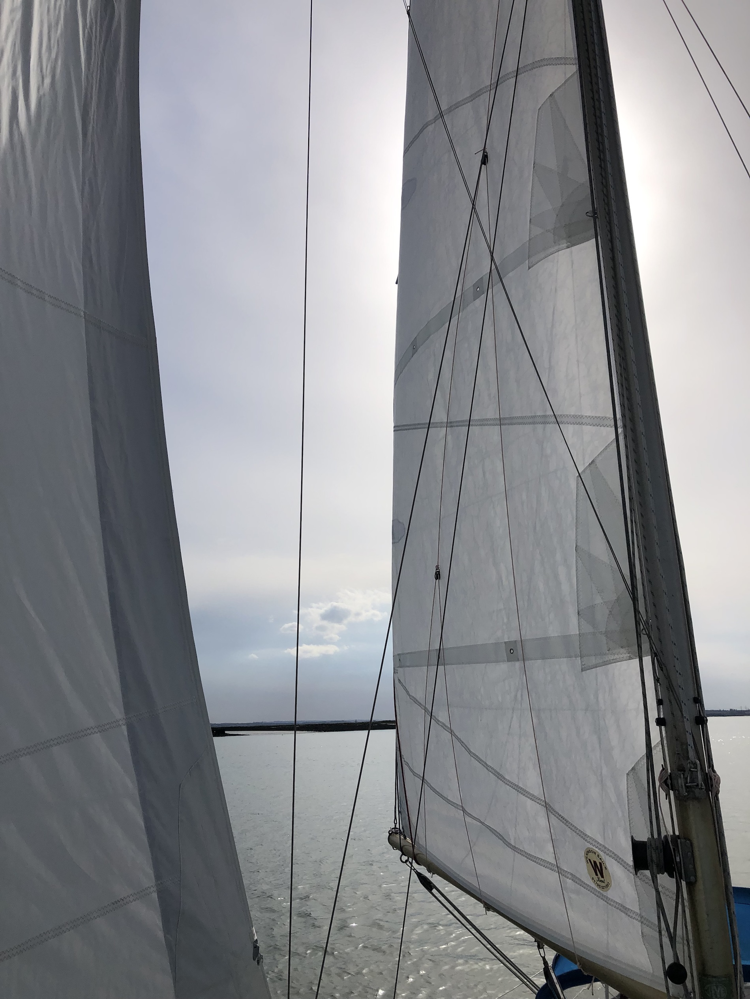
Sailing in variable winds brings very different acoustics, gentle dappled sounds on the hull building to that surging sound you get above 6kn. We were going with the tide but maximum speed was 7.4kn over the ground so probably about 5.5 to 6kn over the water, (my electromagnetic speed log is out of calibration at the moment).
A night on a mooring buoy in Queenborough and off this morning back up the Medway. It's peaceful here on the mooring - the sun is coming into the cabin onto the table and warming an otherwise slightly bracing morning temperature. It was a cool night. Motor-sailed back to Gillingham - a fresh wind on the nose
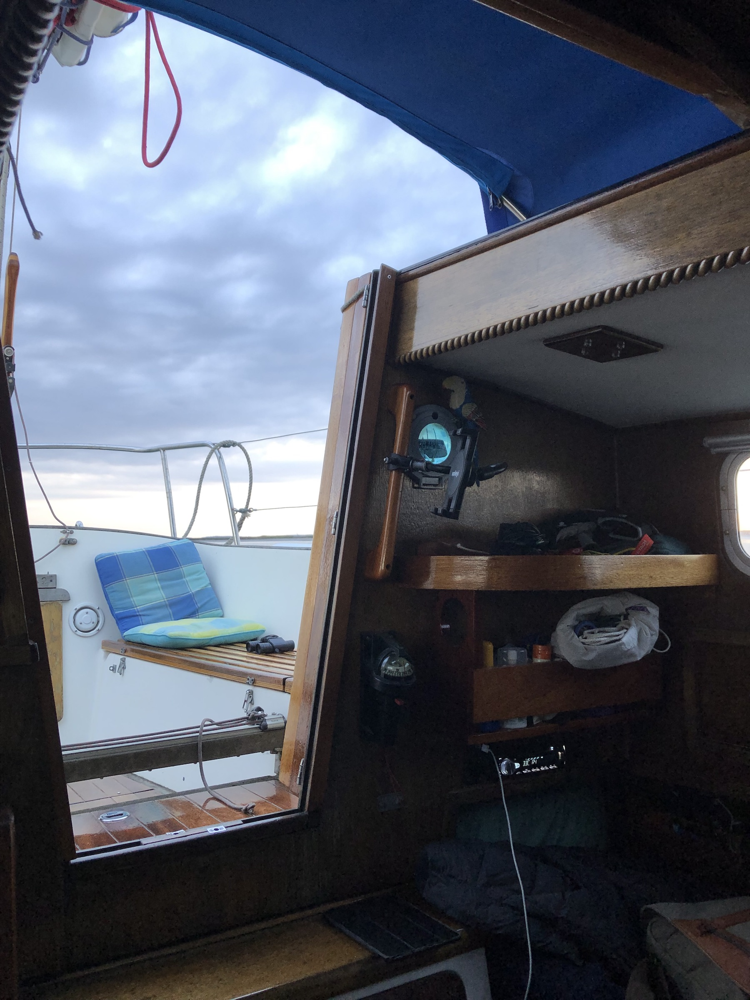
27.5.26
NE 17-21kn. 7.7nm Max speed 6.8km
Sailing with Zephyr at the helm. A solid 19-20kn north easterly wind had us tacking down the Medway in a wind over tide chop and bright sunlight. Lovely. This was just a two hour jaunt at high water practicing use of the winches under load. One reef in the main and a couple of turns in the genoa furler. All went well but I haven't got the set of the genoa when reefed right yet. It appears creased and baggy and I'm sure it's not mean t to be, maybe the foam strip in the luff isn't working or maybe it's my set up. We'll persevere.
14.6.26
NW-NE 5-8kn. 5.8nm
Another lovely gentle afternoon sail down to a quiet Stangate Creek anchorage. Only one or two other boats on a Sunday evening - perfect.
Seagulls, perhaps turns, geese, egrets, oyster catchers, one marsh harrier in the distance and cormorants fishing and fishing. How do they swallow such big fish? Maybe we'll see a seal.
It's low tide now and the air is still, the wind died as we entered the creek and we were held in a kind of whispering suspension for ages before I finally succumbed to the jolt and noise of engine.
This is my first overnight anchorage of the season. It's good to get away from the details of life - or from one set of details to another. The boat is a tiny world of its own in a world of its own - the creeks and marshes of the Medway which spread over a huge area, I imagine the Rother valley was like this once, complex, inaccessible, tidal and full of wildlife. The evening sunlight is turning the mudbanks to gold and the water to silver - sort of.
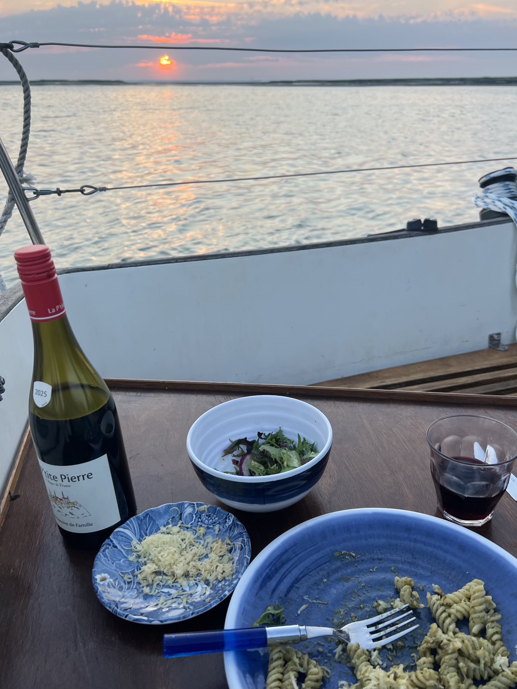
15.6.26
E 5-8kn. 6.1 nm
Green and grey with occasional sunlit strips of brighter colour. Columns of geese process across the creek and a gentle breeze lifts the surface of the water. A harrier just passed overhead ignoring the seagulls which chased it. Now we are opening up into the main channel with that inviting (or is it slightly intimidating?) view out to sea past Sheerness and the Montgomery wreck, and turning away upriver and downwind. In the river the chemical blue paint on a big ship loading containers look wrong in all these organic greys and greens - water, land and sky too this morning. Hardly a soul out here today. Weekday boating on the Medway seems to be a well kept secret - obviously not available to all.
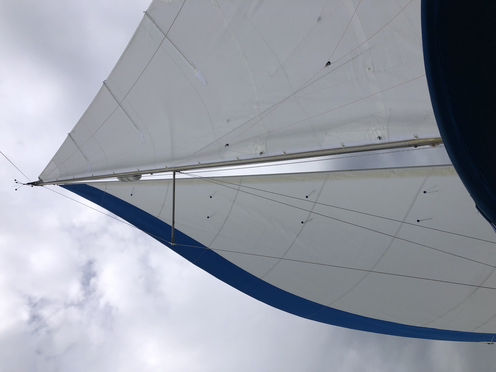
Sailing round the Isle of Sheppey
9.7.26
Gillingham to Harty Ferry. Isle of Sheppey - outside.
E-NE 10-18kn. 26.5nm
A bright morning start at 0815 from Gillingham. Straight down the Medway in calm, calm water motoring quietly and running with the tide. By Queenborough the wind started to build and I briefly switched off the engine at around 1000 as we passed Garrison Point. The Thames estuary looking beautiful today. An astonishing green and turquoise sea with a backdrop of the brown Isle of Sheppey.
As the wind got up the sense of being in the elements increased and we beat into a bright sea of spray and sparkling light. Tacking back and forth down the North side of the Isle of Sheppey one is rewarded with amazing views of the shore and these cliffs. This is geology on the move. Powerful erosion forming sculpted cubist shapes of land slip and resistance in brown and grey. And all the time the turquoise sea in front of us. I would have sailed closer if I was more confident of the depths - next time perhaps.

Several nice long tacks eventually got us to the Columbine buoy and we turned at last into the Swale approaches. It always seems to take a long time to get to the turn at the Columbine and it is tempting to turn sooner but inevitably arriving at low water the depth or lack of it prevents it. Running goosewinged past Shell Ness and into the Swale at deceptive speed in the comparative calm of this point of sail. Our approach to the seal colony on the island was quiet and they took little notice seemingly languidly awaiting our arrival. I counted more than 60 seals, a record for me. At this time of year their coats are rust brown. It is hard to describe their voices - do they bark or honk?
Arrived at Harty Ferry and picked up a vacant buoy at 1450 after a special sail round the north side of the island.
I contemplated carrying on round the island that afternoon, using the rising tide up the Eastern Swale but a call to the Kings Ferry Bridge soon put me off. Heatwave conditions meant that the bridge can only open in the mornings before the mechanism overheats. So I put it off until the morning.
Later as the tide turned the buoy we were on started bashing the hull disturbing the peace, so I opted to drop anchor a little further upstream for the night. All very well but there is always so much weed here!
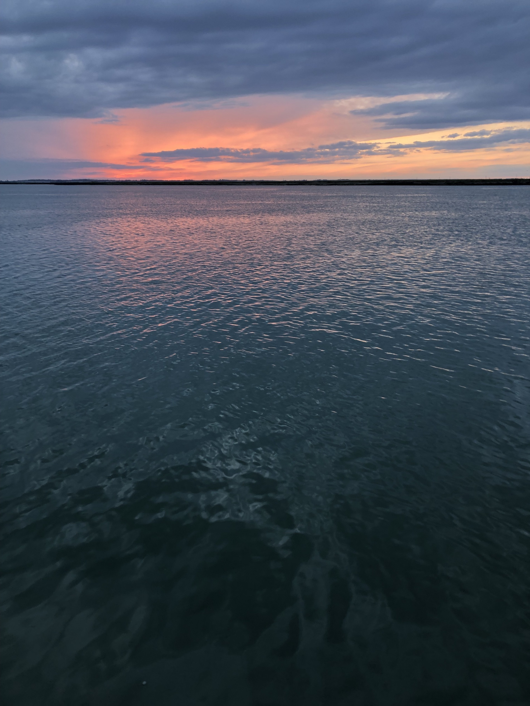
10.7.26
Harty Ferry to Gillingham. Isle of Sheppey - inside.
E-NE 8-12kn. 15.9nm
I called the Kingsferry Bridge at 0645 for guidance on getting through before they close the lifting bridge in the heat. Come straight away they said, we may close it after 0800. I was 1.5 hours away so postponed breakfast and got going as quickly as possible. This was made more difficult by the immense amount of weed on the anchor and chain. After a herculean struggle I finally got the anchor up and got under way. But this only after a tussle with the engine which refused to engage in gear without stalling. After worrying that the morse had broken down it seemed that this was due to a large amount of weed round the prop. By gently going in and out of gear and just starting to turn the prop each time the problem seemed to go away - I think as the weed fell away.
Motored up The East Swale at 1500 revs, more than usual, and getting to the point of diminishing returns in terms of speed to fuel/mile. Never mind we got there as quickly as possible and the bridge keeper was helpful and positive. I had to wait 20 minutes for the next opening so a cup of tea while holding station below the bridge was the thing. Kings ferry bridge is a monument to access and connectivity. The isle of Sheppey starts here and the bridge itself is a fine thing. Designed by engineers Mott Hay and Anderson in the 1950s and opened in 1960 this colossal lifting structure is no mean feat and makes a powerful and evocative portal to pass through even though it is now dwarfed by the newer road bridge - itself evocative of Chinese prints, visible for many miles rising up from the marshes in a long curve. This time approaching and then being allowed through the bridge was made more special by the dicey conditions - heat. Too much heat expansion in the mechanism (which part?) and the mighty machine gives up and the bridge won't lift until it cools down sometime in the night. Mott Hay and Anderson will have designed bridges and mechanisms all over the world and in hotter conditions than the UK, so why is this one so susceptible?
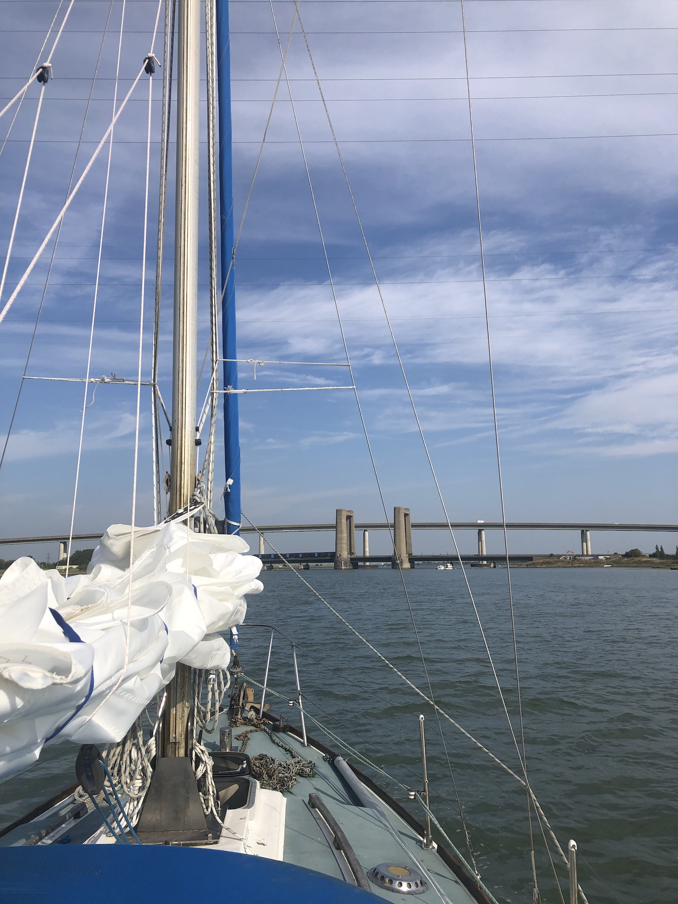
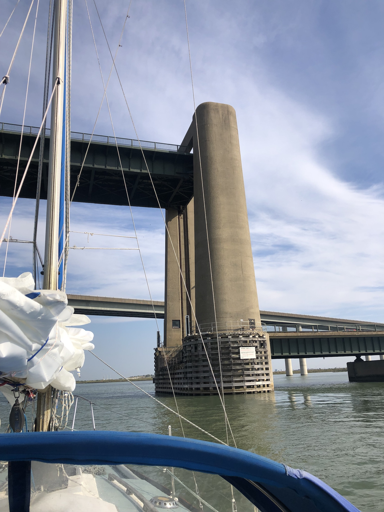
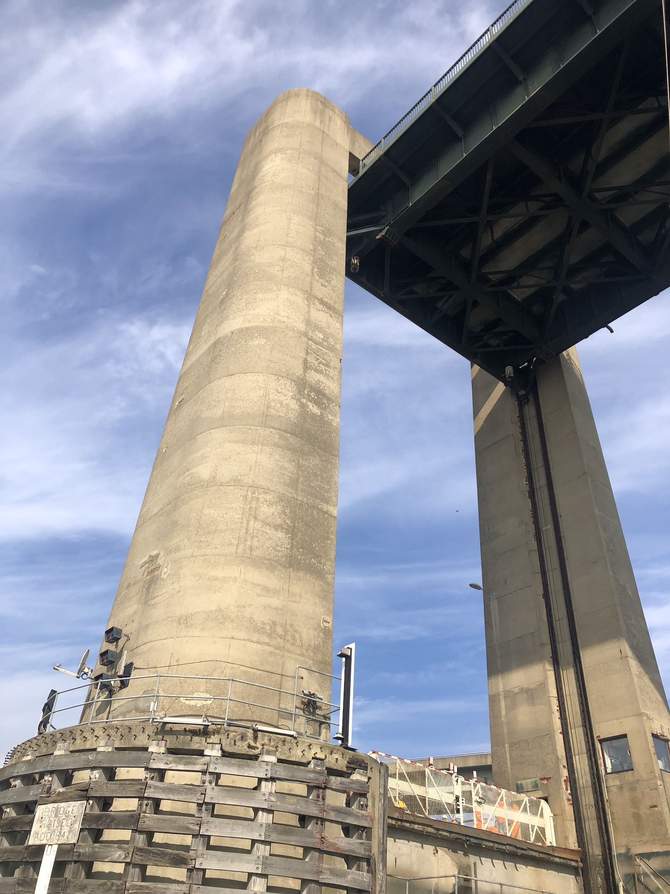
Once through my previous plan to stop for a couple of hours at Queenborough and watch the boats go by seemed less attractive so I kept going out into the Medway. Now we had a following wind but a fast ebbing tide so we motor sailed all the way back to Gillingham to get through the lock in time before the water level dropped too far to get over the cill.
A good trip round the Island.
Greenwich Yacht Club East coast Cruise 2026
25.7.26
Day 1
Gillingham to Queenborough
W 5-8kn
What a gentle and convivial afternoon. The start of the East Coast Cruise with my crew Ian on board as is tradition in the Snow Goose East Coast Cruise. Wind W 5-8kn behind us, sailing in a combination of goosewing and broad reach to suit the bends in the river down a sunlit Medway with three other GYC boats. Slow but pleasant. Queenborough as ever....
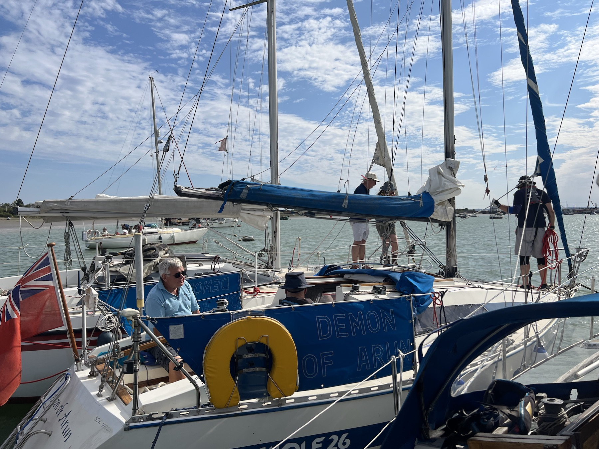
26.7.26
Day 2
Queenborough to Brightlingsea
SW 10-12kn gusting 35kn
Windy. Woke up to a strong westerly across the moorings. Lots of talk in the fleet about whether it was too much for us - it wasn't but it was tough for some boats and one did have to be towed in by the lifeboat after engine failure. We set off under sail from near the start and flew out of the Medway into the maelstrom. Actually a following wind with sails reefed made for manageable sailing at speeds of 5 to 7 kn all day. Getting used to the rhythm of surfing down the waves and pulling on the helm enough to stop rounding up without losing speed was great and an ideal antidote to seasickness which remains a lurking threat - fortunately not this time. It's noticeable how if one concentrates on keeping the boat moving steadily without shocks from sudden steering or sail tweaks you really do go faster. Passing through patches of cloud and sunlight - of greens and blues with rainstorms in the distance over Essex. The boat was really flying today and although I haven't got the hang of Genoa settings when reefed I'll get there. Various boats have broken down en-route with one lifeboat rescue needed resulting from engine failure, hopefully all fixable. The balance of maintenance and bad luck as ever difficult to get right.
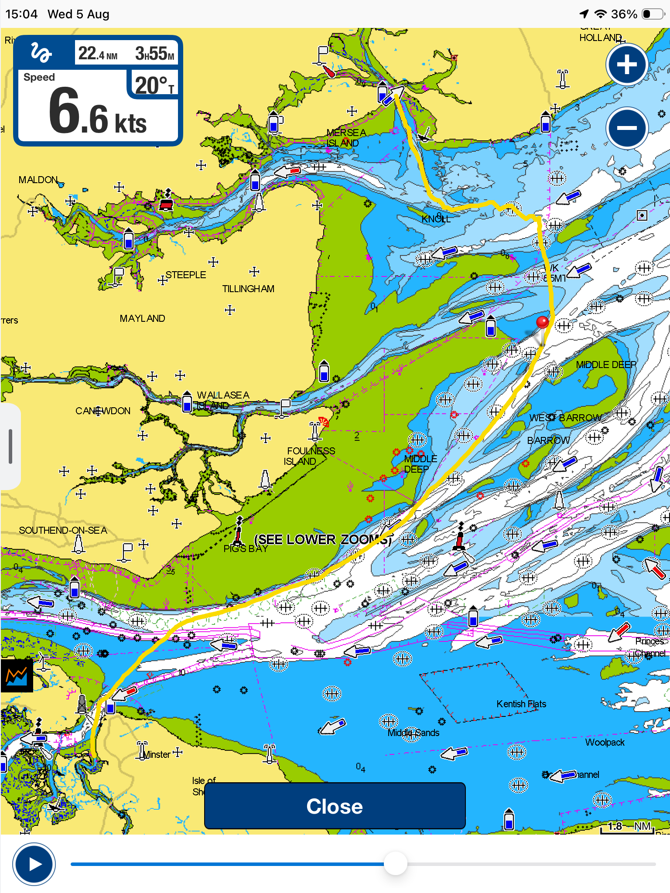
27.7.26
Day 3
Brightlingsea to the Walton Backwaters
SE 5-15kn
A slow start from Brightlingsea waiting for the tide to set, then setting off at 1300 into a pale hot sea. The wind was fickle and very light so motor sailing was necessary for a while. We were coming out of the Colne not long after high water so crossed the Colne Bar with ease and started the long parade past Essex towns seen from the sea sailing down the Wallet. Off Clacton the wind picked up enough to turn off the engine and we had a beautiful beam reach all the way down the Wallet, this slowly turning into a goosewing run as we bent round the coast and into Penny hole bay.
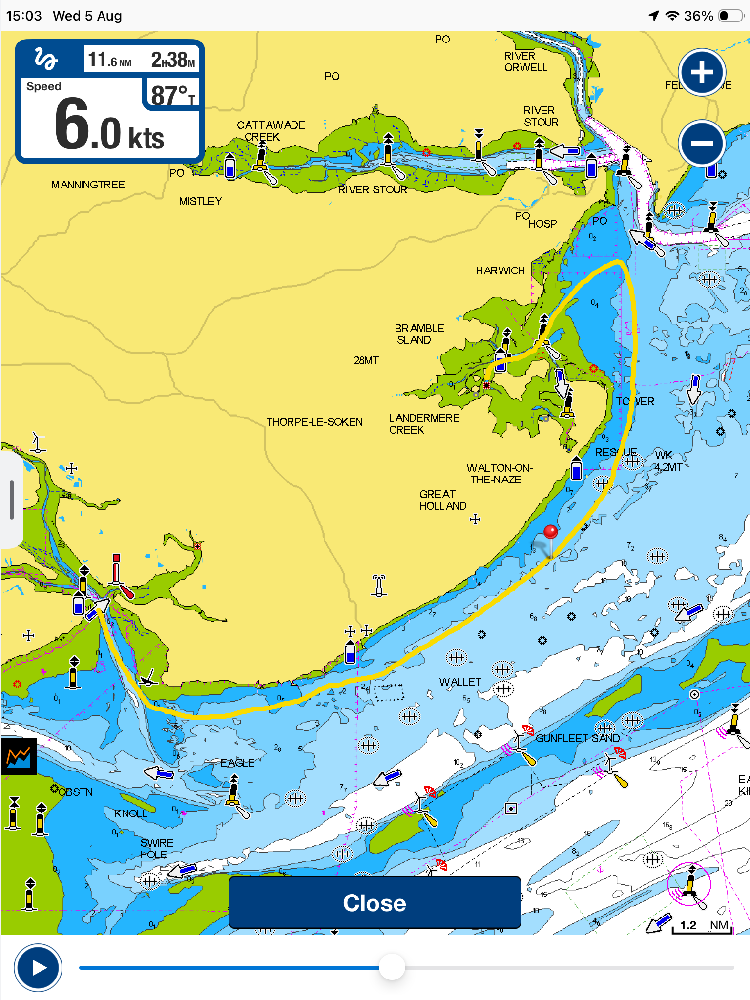
The route across this bay is always puzzling - one is apparently a long way out, in the middle of the bay but still there is not enough depth. We worked our way up to the Pye End buoy before turning abruptly to port into the Walton Backwaters channel. The Pye End buoy is difficult to see against the coast and always seems impossibly near the north shore but it isn’t of course when you get to it. We were coming into the backwaters at low water so crossing very shallow water at the bar, 0.8m under the keel. But once past the bar it gets deeper and buoy hopping our way in worked well. Hamford Water opened up in the evening light with the occasional seal to welcome us. We worked our way carefully into Kirby Creek over the shallows and anchored in good depth. Joined in the creek by four other GYC boats. Moonlight and peace. This is East Coast anchorage at its best.
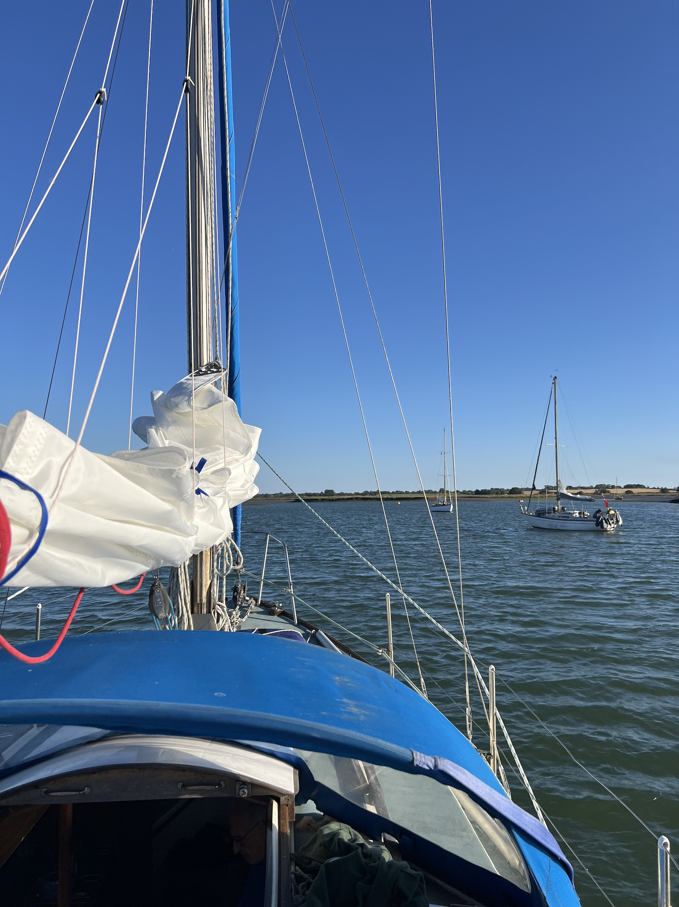
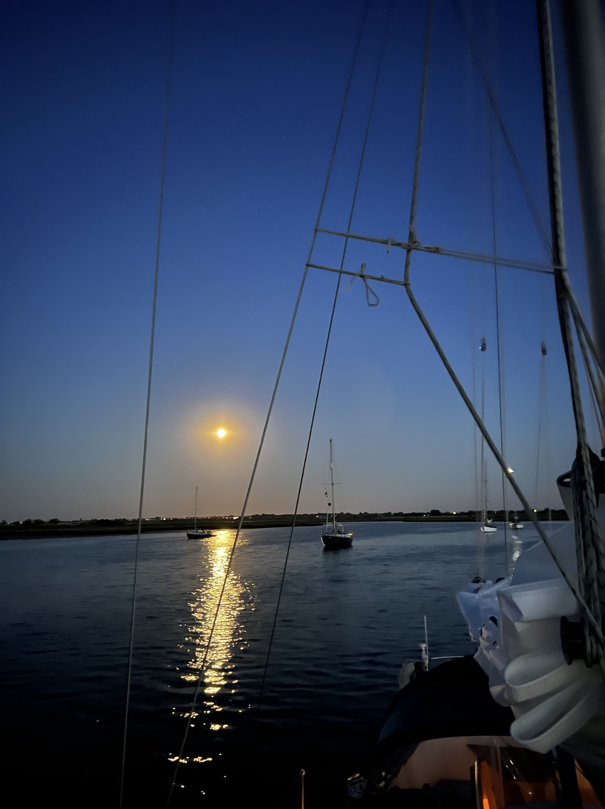
28.7.26
Day 4
Brightlingsea to the Walton Backwaters
SE 4-10kn
Winds were light and variable but we were in no hurry so we sailed on just the mainsail from Hamford Water all the way to Royal Harwich Yacht Club, a remarkable calm, surreal experience passing through the mighty Felixtowe docks with "Evergreen" written in 10m high lettering on 20m high hulls and literally towers of containers. We see these improbable ships passing at a distance in the sea like great lumbering boxes but close up they are extraordinary, intense technological leviathans, more like mobile cities of coloured steel.
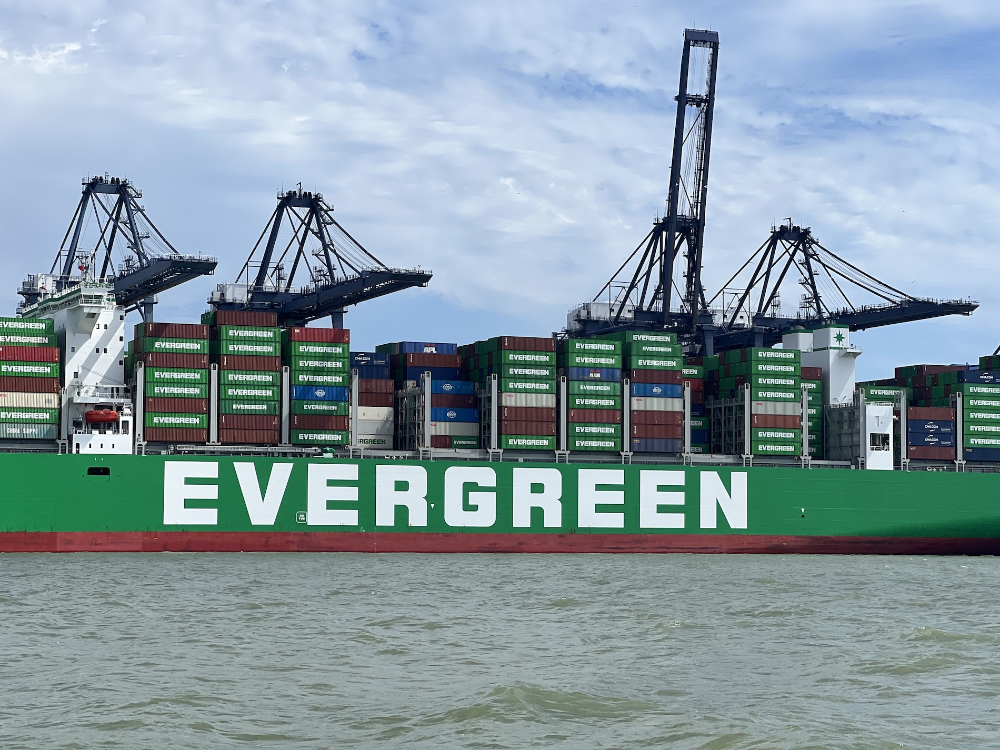
And then suddenly we were past all that and in the big Suffolk Orwell landscape, fields and woods running down to the water, tidal mud and beaches and of course many boats. A warm welcome at Royal Harwich Yacht Club with nearly all the GYC fleet gathered there. Because there were two Macwesters in our fleet an impromptu 'Macmeet' materialised with several owners' association ex commodores and friends - an enjoyable evening ensued. But it was interesting to note that the number of Macwesters in the world is many times more than the numbers in the owners' association. I think that is a pity - it is important for Macwester owners to support and sustain the association to keep the information in one place and as a technical historical resource, but that is clearly difficult.
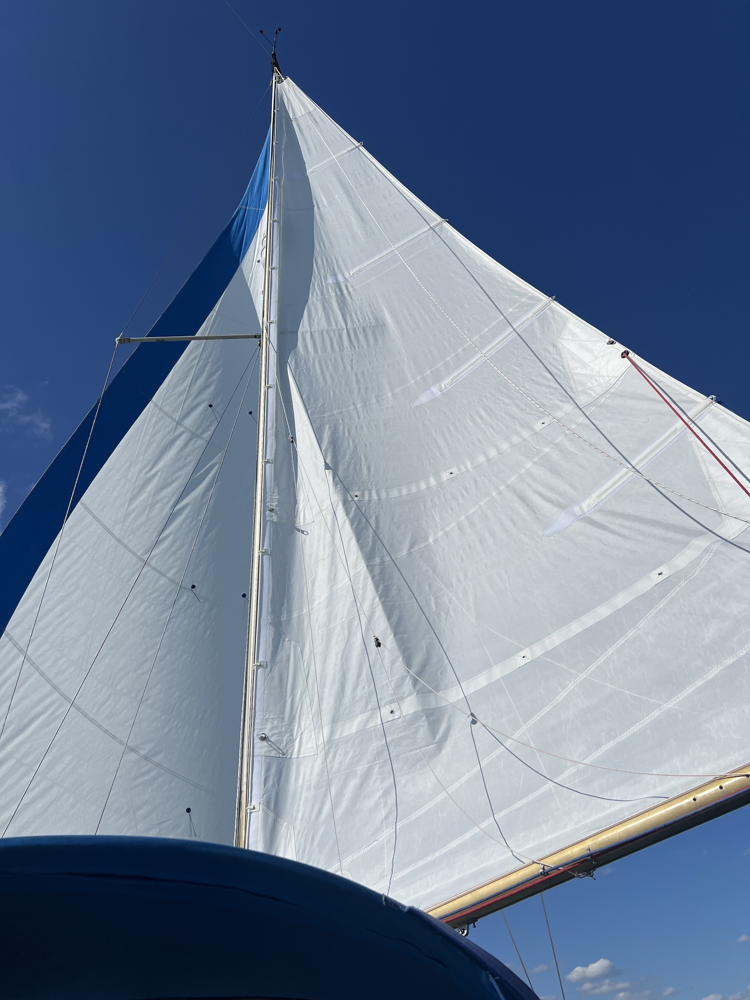
29.7.26
Day 5
Rest day in the Orwell.

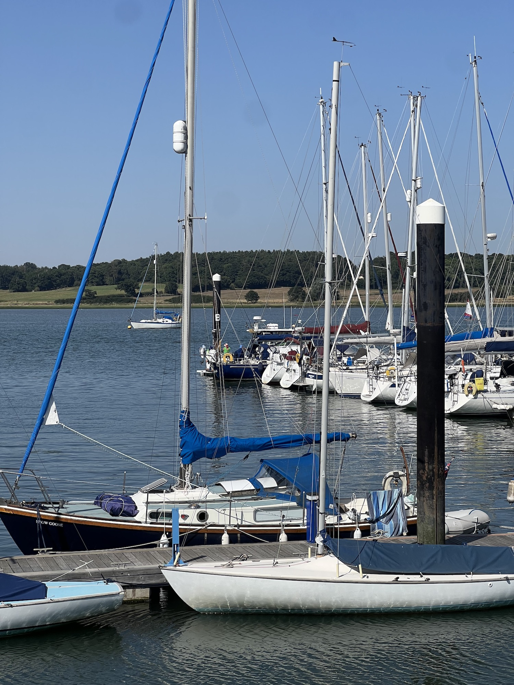
30.7.26
Day 6
A day spent in London at the funeral of my old friend Simon Trewin..
31.7.26
Day 7
Royal Harwich Yacht Club to Brightlingsea
N 3-7kn
Early morning start out of the Orwell. We were joined at Levington by Eos coming out of Suffolk Yacht Harbour bang on time. Pottering down the Orwell we somehow managed to ground gently but got off immediately. Phew! Felixstowe Docks were lined with four mighty ships as we slunk by beneath them. Then a long motor sail down wind across penny hole bay and finally once round Naze head we were able to cut the engine and sail. We worked our way up the wallet in fickle winds but on a good rising tide, perhaps more a gentle drift, but with bursts of encouraging wind - not quite enough though. We held off motoring for as long as possible. You learn a lot sailing in winds like this, so light that as soon as a gust takes you the apparent wind becomes a major component and you have adjust sails to make use of it. The wind finally gave up on us at Jaywick and we motor sailed the rest of the way. Picking our way over the Colne Bar using the ‘secret channel’ through the deep pockets and popping into the Colne and on to Brightlingsea. Six GYC boats here after all.
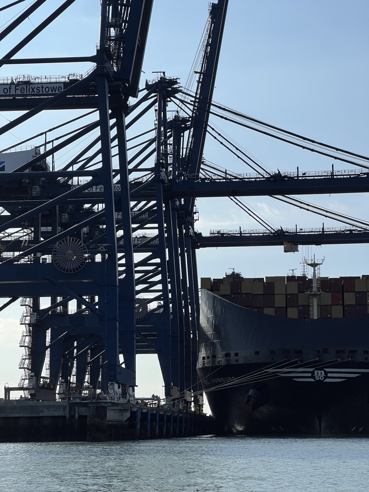
1.8.26
Day 8
Brightlingsea to Queenborough
NE 0-8kn
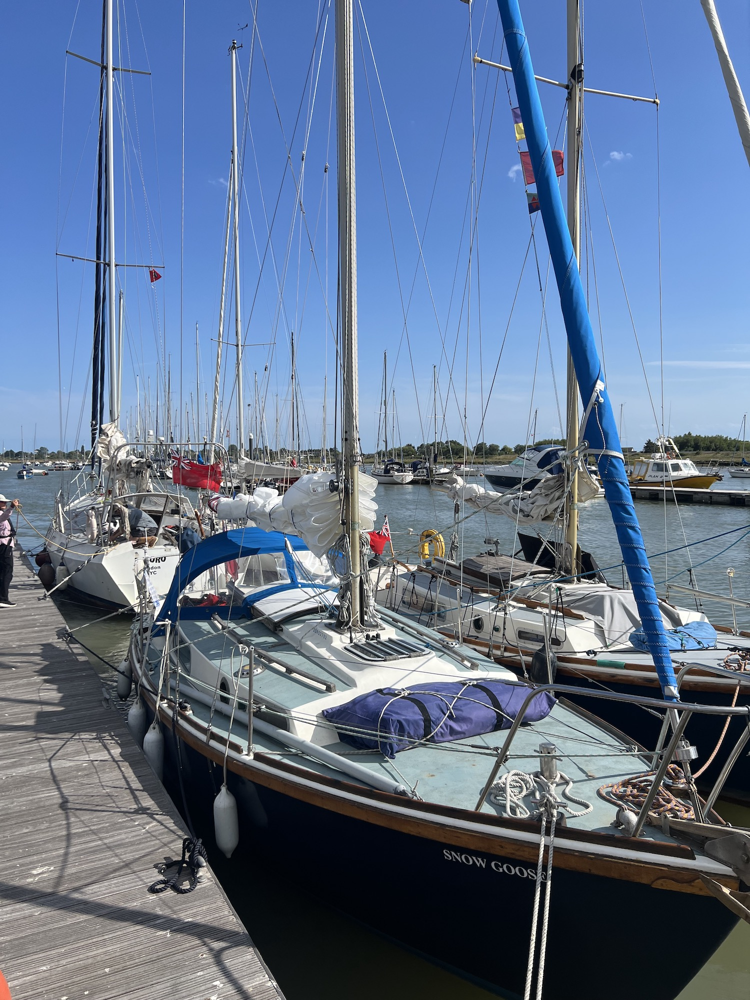

Off at 0700 from the pontoon in Brightlingsea and out into a calm sea. Just enough wind to sail picked up on the way out to the Spitway but after that it was fitful and we motored more than sailed. We crossed the Spitway only 20 minutes after low water but there was still plenty of water under the keel - 1.3m at the lowest.
A strong spring rising tide built up and carried us swiftly all the way up to Queenborough despite the wind. Sailed into the Medway amongst a number of ships coming and going from Sheerness and upriver, keeping note of Medway VTS on channel 74, albeit it is hard to understand their communications with shipping.
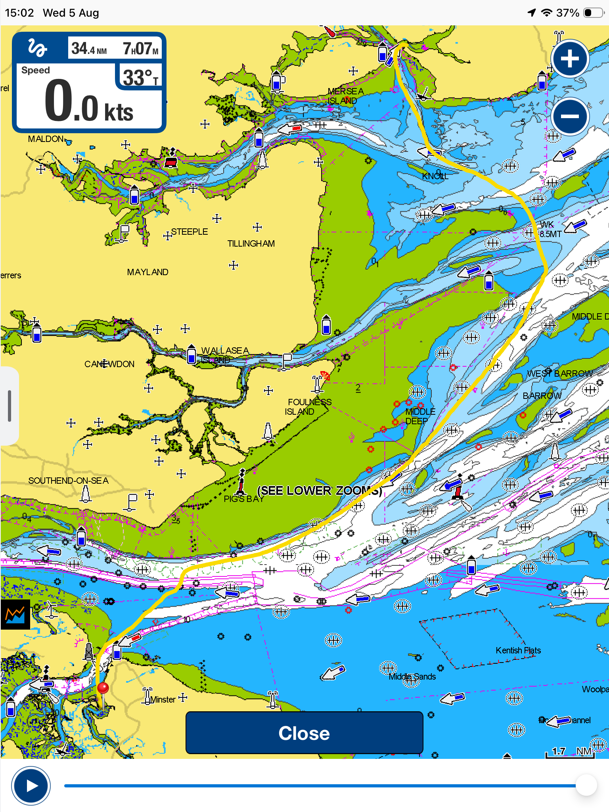
All quiet rafting up on the grey buoys until Lena rammed me and smashed a stanchion off the deck. Elliot, at the helm, was of course mortified but he was manoeuvring much too fast. Ah well, boats were made to be fixed.
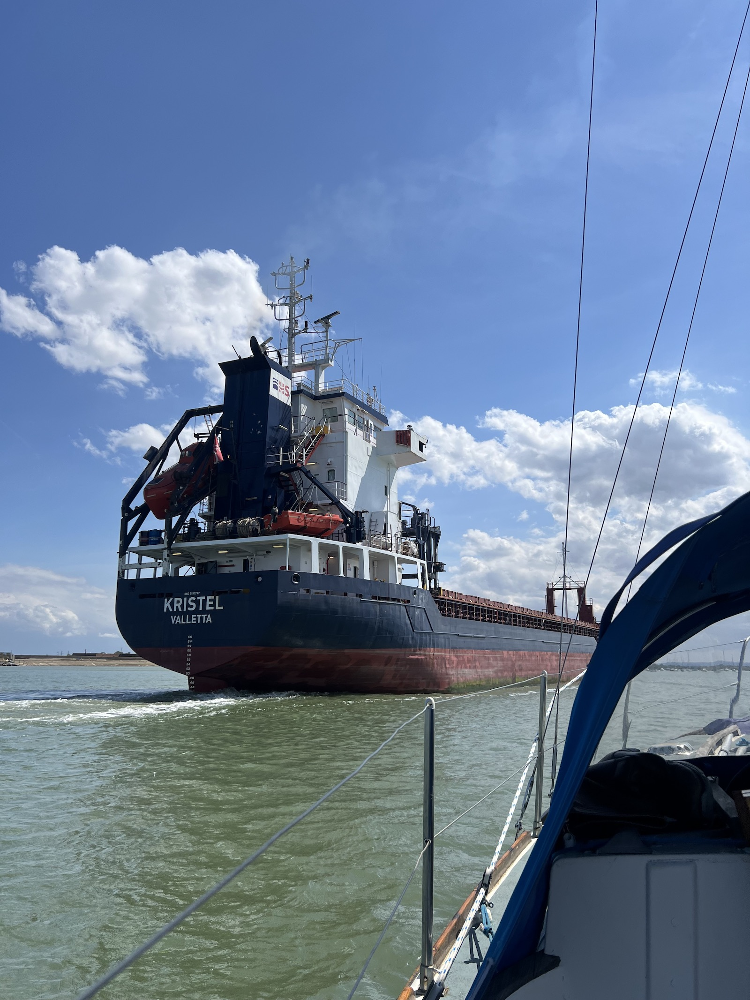

2.8.26
Day
Queenborough to gillingham
SE 10-15kn
A fast run up the Medway helmed all the way by Ian, mostly goosewinged - that takes concentration. Both Demon of Arun and Orinoco sailed with us and interestingly both took a series of deep broad reaches rather than running. We all arrived within a few minutes of one another. Chacun a son gout....